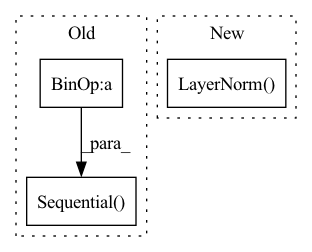

Pattern ID :1781

Before Change
def __init__(self, dim, heads=8, dim_head=64, dropout=0.):
super().__init__()
inner_dim = dim_head * heads
project_out = not (heads == 1 and dim_head == dim)
self.heads = heads
self.scale = dim_head ** -0.5
self.attend = nn.Softmax(dim=-1)
self.to_qkv = nn.Linear(dim, inner_dim * 3, bias=False)
self.to_out = nn.Sequential(
nn.Linear(inner_dim, dim),
nn.Dropout(dropout)
) if project_out else nn.Identity()
def forward(self, x):
After Change
channel_mlp = token_channels
self.AddPosEmb2Value = AddPosEmb2Value
self.norm1 = nn.LayerNorm(token_channels)
self.Attention = MultiHeadAttention(token_channels, heads, dim_head, dropout)
self.norm2 = nn.LayerNorm(token_channels)
self.FFN = FeedForward(token_channels, channel_mlp, dropout=dropout)
In pattern: SUPERPATTERN
Frequency: 3
Non-data size: 3
Instances
Fragment ID: 3150661
Project Name: wamawama/wama_modules
Commit Name: f6865257f4bea4ed62e0170644d99dcdb1d20c94
Time: 2022-10-28
Author: wmy19970215@gmail.com
File Name: wama_modules/Transformer.py
Class Name: SelfAttention
Method Name: __init__
Parent Class: nn.Module
Fragment ID: 3150663
Project Name: cydia2018/vit-cifar10-pruning
Commit Name: 670fb581b519a0875681d2fbf4c4ec824e7fd9a3
Time: 2020-10-27
Author: meathouse47@gmail.com
File Name: models/vit.py
Class Name: Bottleneck
Method Name: __init__
Parent Class: nn.Module
Fragment ID: 3150666
Project Name: kolaszko/haptic_transformer
Commit Name: 480c8a6c89740a357ff79f97d11b8fde6f6e09be
Time: 2021-05-05
Author: mikolaj.lysakowski.bk@gmail.com
File Name: models/haptr.py
Class Name: HAPTR
Method Name: __init__
Parent Class: nn.Module